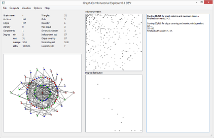
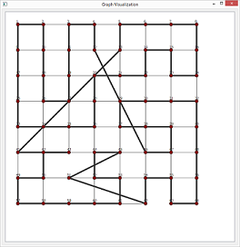
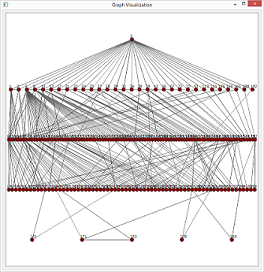

GraphCombEx: Graph Combinatorial Explorer
GraphCombEx stands for Graph Combinatorial Explorer: a software for exploration of combinatorial optimization properties of both real-world and synthetic complex networks.
Principles of GraphCombEx:
- light-weight, memory efficient;
- cross-platform (Windows, Unix, Mac);
- supports a variety of combinatorial properties and metrics.
Features
- support for handling undirected graphs with millions of edges;
- tested on various networks: social networks, biological data, scheduling networks and many more;
- metrics supported include: the number of triangles, connected components, diameter of the main component;
- combinatorial properties supported include: intervals for maximum clique, independent set, dominating set, longest cycle;
- network visualisations: centrality-based, grid-based, tree-based, circular.
Screenshots



Source Code Repository
https://github.com/davidchalupa/GraphCombEx
Disclaimer: The source code is provided without any legal responsibility of the author. The source code can be compiled, executed and used at the risk of the user.
Any questions? Please contact the author, the contact information is provided on the main page.